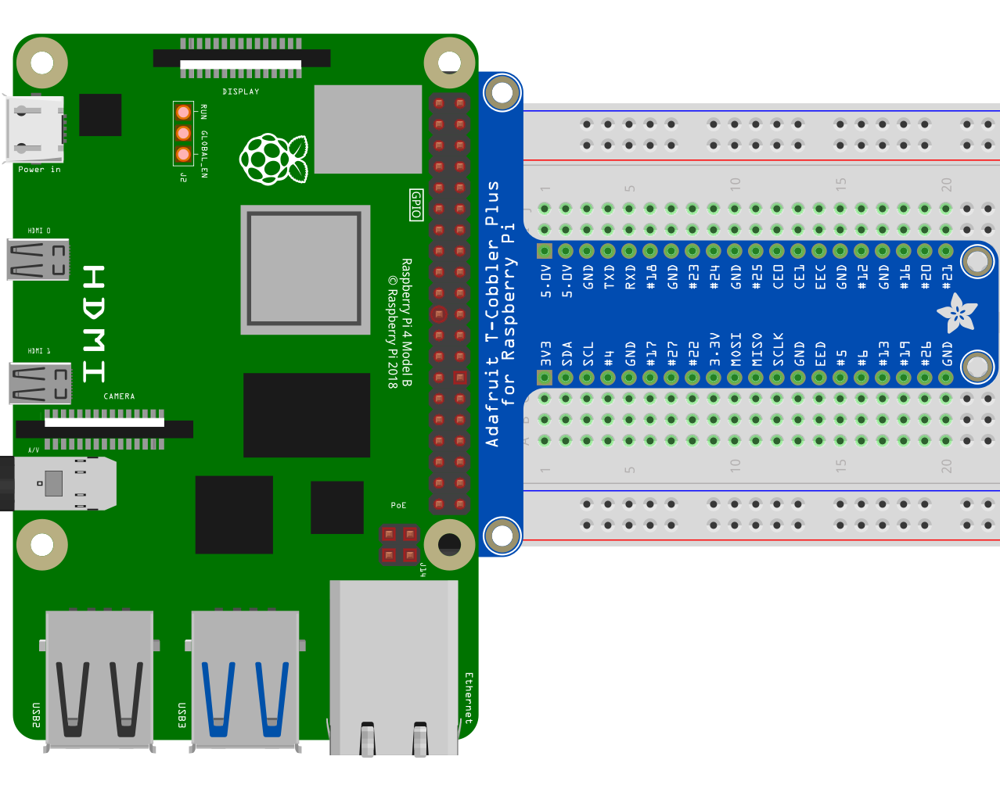

Hardware + softwareRaspberry Pi Alarm System
A Raspberry Pi 4B alarm built with Spring Boot, Pi4J and Thymeleaf. A non-blocking finite-state machine coordinates keypad, PIR sensor and buzzer events while supporting local and browser-based control.